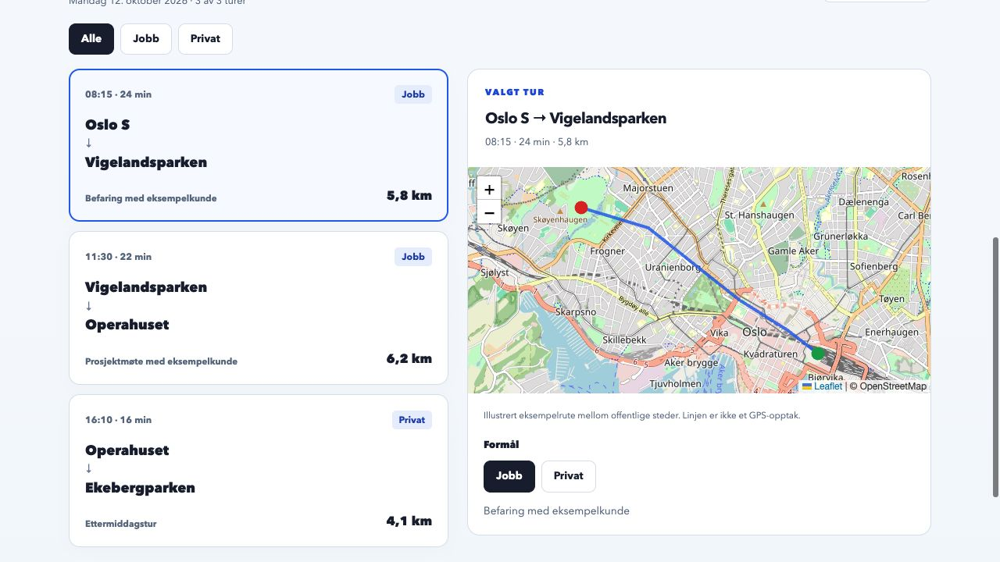

Eget prosjekt · mobil + web + API
Kjørebok: fra GPS-punkter til en forståelig turlogg.
En kjørebok må gjøre mer enn å tegne en strek på et kart. Den må håndtere usikre posisjoner, skille turer og gjøre resultatet lett å kontrollere og bruke videre.
Omfang: Eget fullstack-prosjekt med Expo-mobilapp, Next.js-webapp og Fastify-API.
Ansvar: Mobil, web, API, databaseoppsett og leveranseoppsett samlet i ett repository.
Demo: Fiktive turer, kart, kategorisering og CSV-eksport. Krever ingen konto.

Problemet
GPS-posisjoner inneholder støy. Når telefonen står stille, kan nye posisjoner likevel flytte seg. Summerer man bare avstanden mellom alle punktene, kan en parkert bil få en tilsynelatende kjørelengde. Samtidig trenger brukeren både oversikt, kart og dokumentasjon på turene.
Arkitekturen
Expo / React Native ─┐
├─ Fastify API ─ Prisma ─ PostgreSQL
Next.js / React ────┘
Delt TypeScript-pakke: domenetyper og satserHvorfor en delt pakke?
Web, mobil og API arbeider med de samme begrepene: tur, kjøretøy, sted og rapport. Delte typer reduserer dobbeltarbeid og gjør endringer synlige på tvers av appene. Zod brukes for validering ved systemgrenser.
Avveining: En delt pakke kobler appene tettere sammen. TypeScript alene validerer heller ikke data som kommer over nettverket; API-et må fortsatt validere innkommende forespørsler.
Hvorfor React Native og en egen webapp?
Expo gir et felles utgangspunkt for iOS og Android. Next.js-webappen gir en nettleserflate for gjennomgang av historikk, kart og rapporter. Delingen ligger i domenet, mens grensesnittene kan tilpasses bruken.
Avveining: To grensesnitt må vedlikeholdes. Bakgrunnsposisjonering, tillatelser og batteribruk må fortsatt håndteres og testes på hver mobilplattform. Kodegjenbruk fjerner ikke de plattformspesifikke kravene.
Et konkret teknisk problem: GPS-støy
Behandlingen filtrerer blant annet punkter med dårlig nøyaktighet og usannsynlige forflytninger. Deretter beregnes bevegelse og stopp, og kartlinjen forenkles. Rå GPS-punkter og den bearbeidede visningen har ulike roller.
Avveining: For stram filtrering kan fjerne faktisk bevegelse. For løs filtrering beholder støy. Derfor er behandlingen delt opp i egne funksjoner som kan testes med ulike punktserier.
Se GPS-behandlingen, lagring og behandling av turpunkter og den delte domenepakken.
Leveranse og kvalitet
Repositoryet inneholder databasemigrasjoner, GitHub Actions for bygg og API-tester, produksjonsdeploy og Maestro-flyter for mobiltesting. Web og API kjøres som separate tjenester på egen server.
Den åpne demoen bruker den eksisterende kartkomponenten med oppdiktede ruter. Den viser gjennomgang og kategorisering uten å opprette en bruker eller kontakte API-et for turdata. Endringer ligger bare i minnet og kan nullstilles.
Det demoen ikke viser
Demoen demonstrerer ikke GPS-opptak i bakgrunnen, autentisering eller hele rapportflyten mot API-et. Kartlinjene er illustrasjoner mellom offentlige steder. De delene av mobilappen som avhenger av enhet og operativsystem, må vurderes på en fysisk enhet.